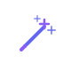
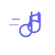

Projects
Learn more
This page mixes projects I am actively building with ideas I want to exist in the world. Some I am building myself, some I am looking for collaborators or founders for, and some I may support as an investor, advisor, or power user. The scale ranges from toy projects to venture-scale startups.
Come say hiMain Projects
Beta
Balance
Bipolar copilot app. AI-powered mood tracking and insights for managing bipolar cycles, with a Hebrew-first interface and WhatsApp integration.
Active
Jarvis
My personal AI chief of staff for websites, repos, research, planning, and operations.
Idea

Wish Machine
An AI-era venture studio where I list ideas I care about, build some, invite others to build some, and may fund the best ones.
Active Projects
Active
Bot Academy
A learning library for AI agents, with practical OpenClaw lessons, prompts, and operating principles.
Active
Tiny PR Bot
GitHub bot that creates microscopic pull requests so review is faster and merge conflicts stay small.
Active
ron.build
A Hebrew blog about what I am building, and about my builder journey.
Active
Know Thyself
A daily self-awareness writing game for noticing patterns, blind spots, and inner truth.
Ideas
Idea
OpenClaw Playground
A free sandbox where people can try real OpenClaw agents with 1-click.
Idea

Song-Aware Running Coach
A Spotify-like running app with coaching timed to song starts, endings, and transitions.
Idea
Responsible Disclosure Bot
Privacy-first bot that detects accidental Bitcoin self-doxxing in public posts and privately warns the poster before the leak spreads.
Idea
Jump In
A project to help people find activities they're interested in right now, leveraging real-time capabilities and localization to fit diverse schedules and preferences.
Idea
WarmRoute
AI-native premium service that turns a short trip into a small number of warm, high-trust meetings. Trip-triggered relationship routing for founders, investors, and operators.
Idea
Next-Level Spa
A world-class hot/cold therapy spa concept for Tel Aviv, designed around recovery and calm.
Launched Projects
Building Something Interesting?
If you have an idea that should exist, send it over.
💡 Submit Your Idea